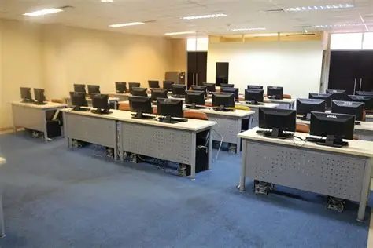

Tujuan kegiatan
Peserta mengenal cara developer menyusun informasi, menggunakan tools, membaca error, dan membangun sesuatu secara bertahap.
PROJECT APLIKASI WEB
Dari pengguna teknologi menjadi pembuat teknologi.
TechStarter Day adalah kegiatan pengenalan dunia pengembangan web dan untuk mahasiswa baru prodi Teknologi Informasi.
Peserta mengenal cara developer menyusun informasi, menggunakan tools, membaca error, dan membangun sesuatu secara bertahap.
